Computer Graphics & Digital Imagery
4th year engineering/Master's level student specializing in computer graphics and digital imaging. I work on rendering, procedural generation, and real-time graphics. Here are some of my projects, for your consideration.
Raytracer
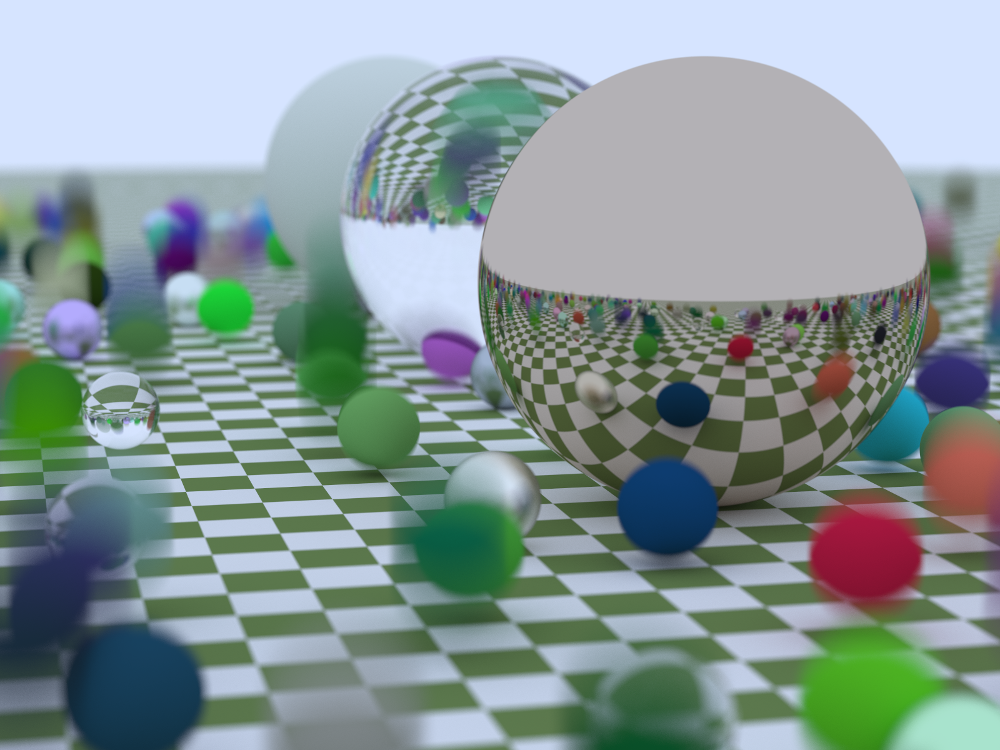
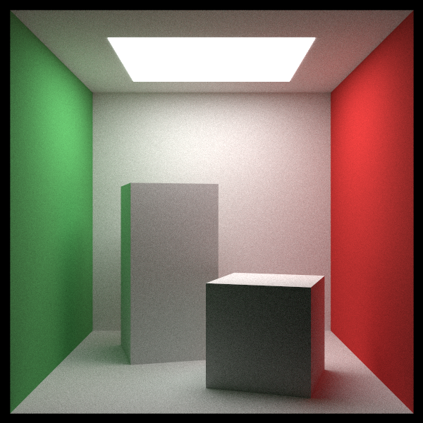
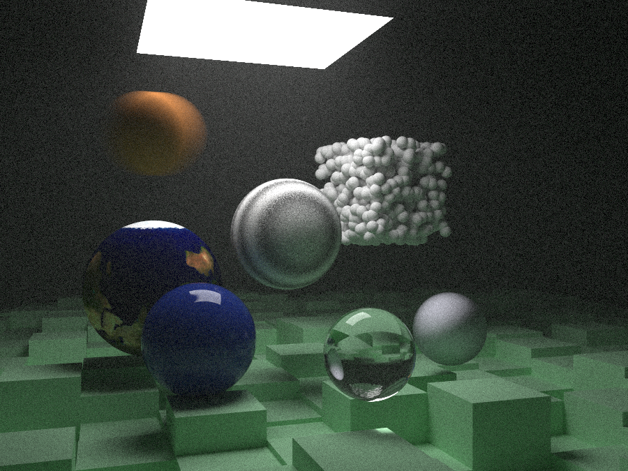
Using Peter Shirley's, Trevor D. Black's and Steve Hollasch's book series Ray Tracing in One Weekend, I am implementing a (basic) sample based multi-threaded Monte Carlo Ray Tracer in C++, with reflections, refraction, emission, Noise, Constant Density Mediums...
I plan on making a small Editor for it using Unity or Godot, inspired by old version of the software Bryce 3D.
Raycaster based 3D engine
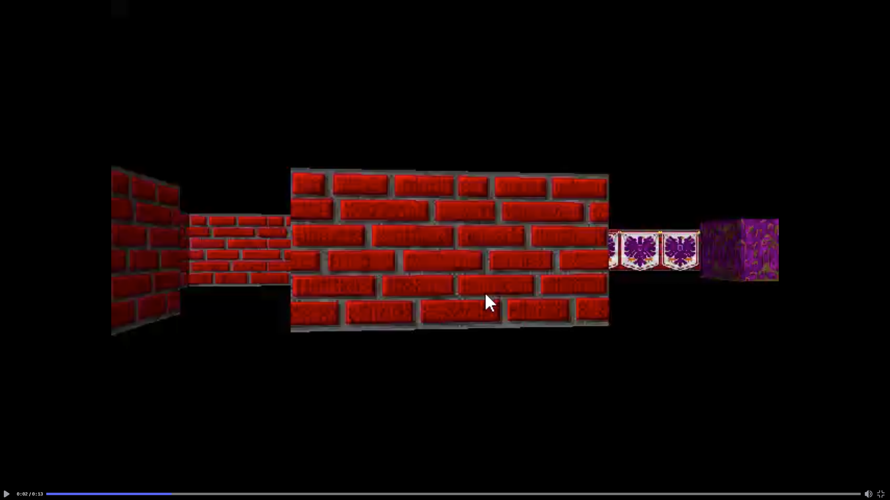
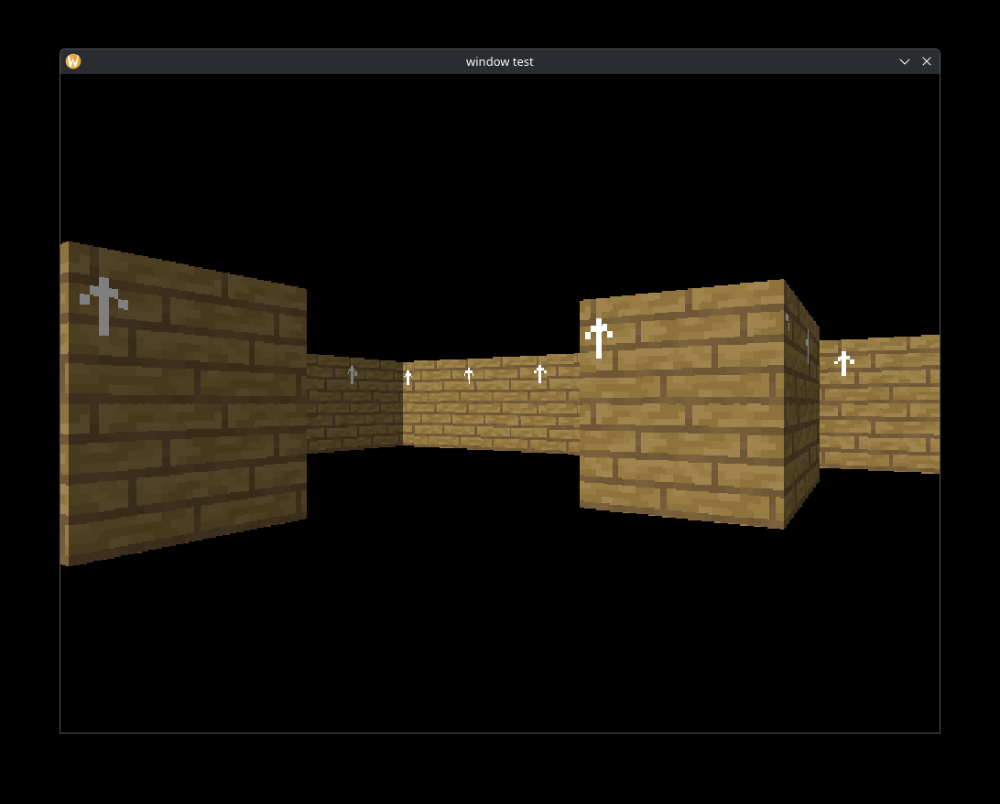
Inspired by Wolfenstein 3D, its source code and its analysis provided by Fabien Sanglard in his book Game Engine Black Book: Wolfenstein 3D, I am implementing a "3D" game engine, with a level editor, both fully written in C++ using only the SDL2 and Dear Imgui.
the main idea here is to use it to develop some small games in the style of doom, I.E. an episodic format.
Wave Function Collapse Algorithm
I am implementing in C++ the Wave Function Collapse algorithm, in its two "variants" (the "tile" model and the "overlapping" model).
My main objective here is to build a small tool to generate images using the algorithm, but I might add to it some animations to show how the output is generated.
I will also definitely implement it in 3D as soon as I find an interesting use case for it, probably in the project below.
2D Dungeon Generator
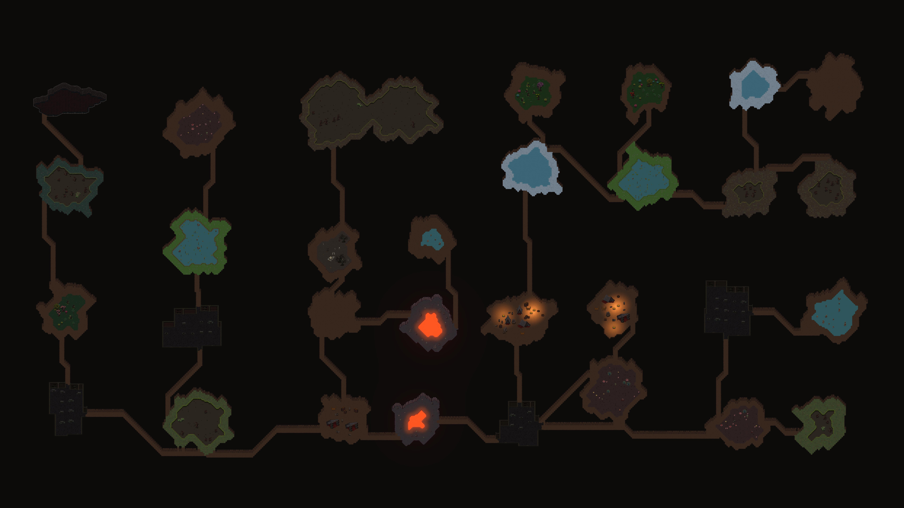
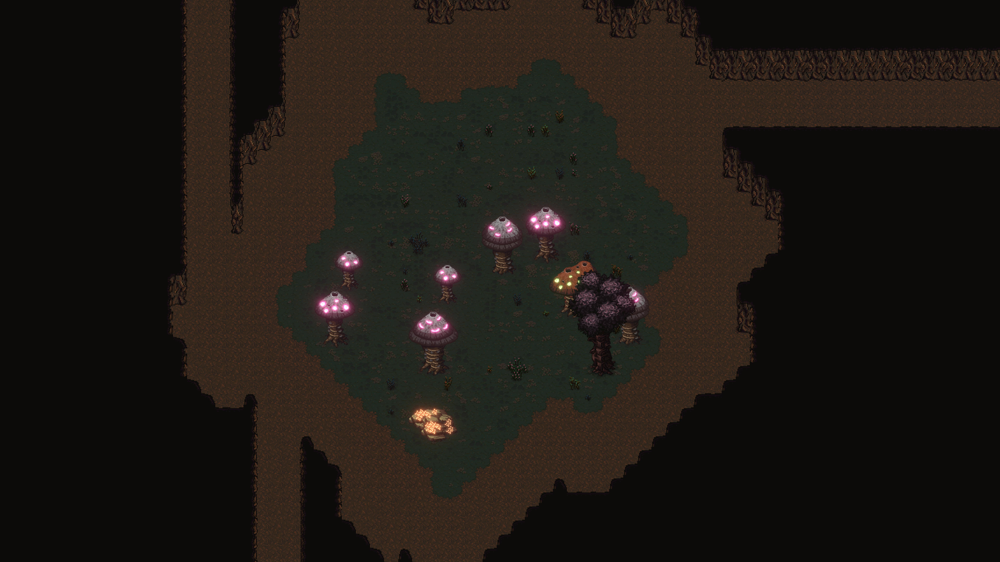
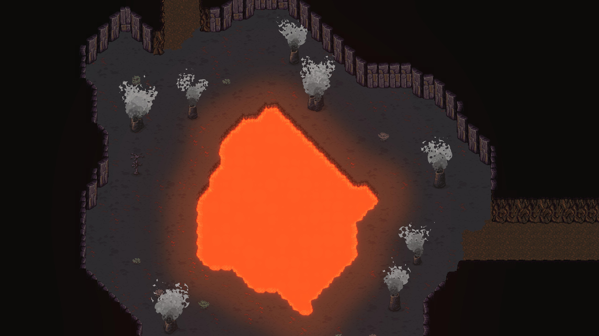
Using Binary Space Partitionning and Mathematical Morphology, I implemented a modular dungeon generator in Unity, which takes tiles and arranges them in a cave fashion, with different biomes, ruins, catacombs...
I also experimented a bit with shaders and visual effects to make the rooms look more interesting.
I do plan on remaking it, using 3D assets to do some kind of fake 2D, in the style of the game Core Keeper.
Game Jams
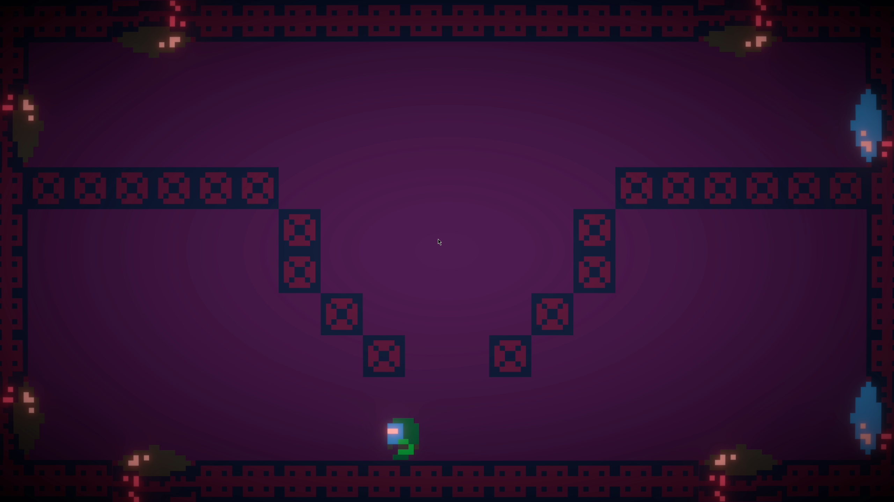
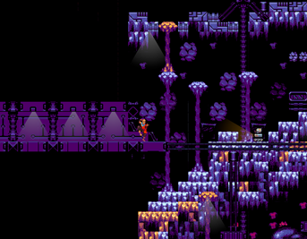
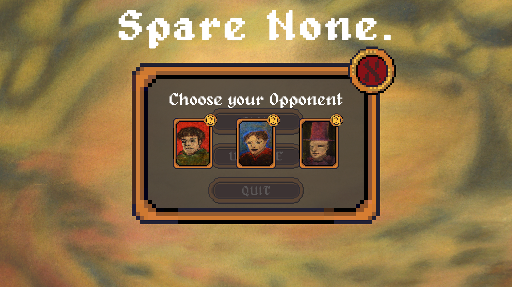
I participated in multiple game jams throughout the years, both alone and in teams, with other developers or artists.
Here is an example of my work. You can find my "published" games on itch.io, under my alias, Nuageroue.
I also participated in an art project centered around projecting bits of games onto paintings, to interact with them.
all done using Unity, I also participated to a school gamejam where my team and I built a 2D engine in C++.
Academic Projects
Throughout my studies, I worked on multiple small projects aimed to build a better understanding of the courses I follow.
Mostly done in duo, they cover a wide array of domains:
- We developed a compiler for a small functional language in C++, covering lexing, parsing, and code generation.
- We implemented variational methods for image regularization, including Tikhonov regularization and Euler-Lagrange optimization, applied to denoising and restoration problems, but also image convolution from scratch, and seam carving for content-aware image resizing.
- We built a text editor from scratch in C++ using only SDL2, handling rendering, input, and cursor management without any high-level UI framework.
About
I'm a 4th year engineering student specializing in digital imaging. My coursework covers image synthesis, image processing, computer vision, AI, game development with Unity, and many more. I'm interested in image synthesis and real-time rendering, which are subjects I try to expand and explore through all the projects you have just seen, but also by reading academic papers and books on those. I also completed an internship in VR in 2025 where I explored Godot's strength for AR/VR experiences in industrial context by building small demos. Most notably, I worked on hand pose recognition.
clement.oliveira@etudiant.univ-rennes.fr - GitHub - Itch.io - Resume